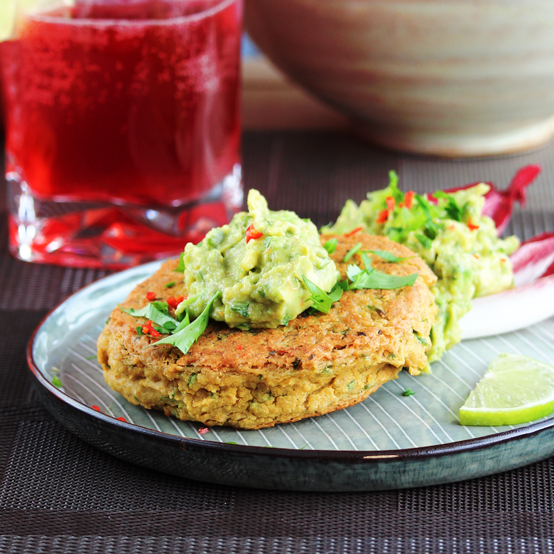

Chickpea Burger

Description
The chickpea burger is a delicious meal that's healthy and quick to make. It can be served on an open toasted wholemeal bun with guacamole on top.
This recipe provides 8 servings.
Ingredients
- 2 cups dried chickpeas (garbanzo beans)
- water to cover
- ½ cup roughly chopped cilantro leaves and stems
- 2 medium eggs
- 5 cloves garlic, peeled
- 3 tablespoons chickpea flour
- 2 tablespoons tahini
- 2 teaspoons ground coriander
- 1 teaspoon salt
- 1 teaspoon ground cumin
- ½ teaspoon chili powder
- ½ cup vegetable oil, or as needed
Steps
- Place the chickpeas into a large container and cover with several inches of cool water; let stand 8 hours to overnight.
- Drain water from beans and transfer beans to a pot; cover with water. Bring water to a boil; reduce heat and simmer until beans are tender, about 1 hour. Cool beans until easily handled.
- Combine chickpeas, cilantro, eggs, garlic, chickpea flour, tahini, coriander, salt, cumin, and chili powder in a blender; blend until well mixed but still chunky. Form mixture into patties.
- Heat oil in a large skillet over medium heat; fry patties until golden and crisp, about 3 minutes per side.